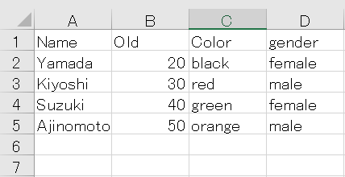
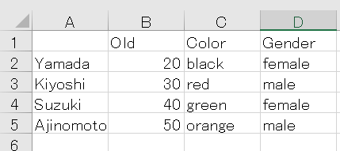

Hướng dẫn cách xử lý file CSV trong python. Bạn sẽ học được cách đọc file csv trong python dưới dạng list bằng hàm csv.reader hay dưới dạng dictionary bằng class csv.DictReader. Bạn cũng sẽ học được cách mở file csv trong python với các trường hợp đặc biệt như mở file CSV chứa dấu ngoặc kép, chứa header v.v.., qua đó có thể lấy giá trị của hàng, cột và cell trong file csv python sau bài học này.
Trước khi đọc file trong python
Để đọc file csv trong python, trước hết chúng ta cần mở file đó bằng hàm open() hoặc bằng câu lệnh with mà Kiyoshi đã hướng dẫn trong bài Mở và đóng file trong python.
Sau khi mở file và thu về một object file, chúng ta có thể sử dụng tới phương thức read để đọc file csv này như các loại file text khác trong python.
Giả sử chúng ta có file user.csv trong thư mục ./user/user.csv với nội dung sau đây:

Chúng ta sẽ mở file csv này và thu về file object gồm nội dung file csv dưới dạng txt như sau:
with open('./user/user.csv') as f: |
Bạn có thể thấy các giá trị trong nội dung file csv dưới dạng txt được phân cách bởi dấu phẩy , trong ví dụ trên.
Về cơ bản thì đến bước này là chúng ta đã đọc xong file csv trong python rồi, tuy nhiên do kết quả đọc chỉ dưới dạng txt rất khó thao tác, nên chúng ta cần chuyển kết quả này về dạng list thông qua hàm csv.reader, hoặc dạng dictionary thông qua class csv.DictReader để có thể dễ dàng thực hiện các thao tác xử lý nội dung file csv.
Và để làm được điều đó thì chúng ta cần sử dụng tới hàm csv.reader() trong module csv.
Đọc file csv trong python | csv.reader()
Hàm csv.reader trong Python
Hàm csv.reader() là một hàm có sẵn trong module csv, có tác dụng đọc file CSV trong python.
Đây là hàm không thể thiếu khi chúng ta muốn thao tác với file CSV trong python.
Để có thể sử dụng hàm csv.reader(), chúng ta lưu ý cần phải import module csv vào chương trình như sau:
import csv |
Cú pháp sử dụng hàm csv.reader để đọc file CSV trong Python như sau:
csv.reader(f)
Trong đó f là object file thu về khi mở file thành công bằng hàm open hoặc câu lệnh with.
Hàm csv.reader() sẽ trả về một trình lặp, trong đó chứa các list với mỗi list là nội dung của một dòng được đọc ra từ trong file CSV.
Ví dụ cụ thể, chúng ta đọc file CSV bằng hàm csv.reader như sau:
import csv |
Đọc file csv và lưu kết quả dưới dạng list bằng hàm csv.reader()
Như đã nói ở trên thì hàm csv.reader() sẽ trả về một trình lặp, trong đó chứa các list với mỗi list là nội dung của một dòng được đọc ra từ trong file CSV.
Sau khi thu được trình lặp này, chúng ta có thể sử dụng vòng lặp for để lấy ra lần lượt các list chứa các dòng trong file CSV từ trong trình lặp đó. Khi đó, chúng ta có thể tiến hành xử lý nội dung file CSV thông qua các hàm và phương thức xử lý list trong Python.
Ví dụ cụ thể, giả sử chúng ta có file user.csv có đường dẫn ./user/user.csv với nội dung sau đây:
Chúng ta tiến hành đọc file csv này bằng hàm csv.reader(), thu về trình lặp, và in ra các list chứa các dòng của file CSV như sau:
import csv |
Chúng ta có thể thấy từng dòng trong file CSV sẽ được đọc và lưu lại dưới dạng các list, với phần tử là giá trị có trong từng cột tại dòng đó.
Trong trình lặp, các kết quả là các list tồn tại độc lập, nên để sử dụng các list này một cách tổng quát, chúng ta cần lưu chúng vào một list hai chiều đại diện cho toàn bộ nội dung file csv, bằng cách sử dụng tới List comprehension trong python như sau:
with open('data/src/sample.csv') as f: |
Lấy giá trị của hàng, cột và cell chỉ định trong file csv
Bằng việc truy cập vào phần tử trong list hai chiều vừa tạo ở trên, chúng ta có thể lấy giá trị của hàng, cột và cell chỉ định trong file csv.
Ví dụ, chúng ta lấy giá trị của hàng thứ nhất và hàng thứ hai trong file csv như sau:
print(l[0]) |
Nếu chúng ta muốn lấy một cell với hàng và cột chỉ định, chúng ta viết:
print(l[0][0]) |
Nếu chúng ta muốn lấy giá trị của một cột chỉ định trong file CSV, chúng ta cần áp dụng thêm lệnh hoán đổi hàng và cột của list trong python với cách viết sau đây:
l_hoandoi = [list(x) for x in zip(*l)] |
Lưu ý rằng các giá trị lấy ở trên đều ở dưới định dạng chuỗi, do đó trong trường hợp cần sử dụng các giá trị trên dưới dạng số, chúng ta cần phải Chuyển chuỗi thành số trong python.
print(l[1][1]) |
Chỉ định dấu phân cách delimiter
Về mặc định, Class csv.reader() dùng dấu phẩy , làm dấu phân cách khi đọc file csv trong python. Và dấu phẩy , cũng được coi là dấu phân cách mặc định cho các file CSV.
Tuy nhiên trong một số file CSV có thể dùng dấu khác để thay dấu phẩy làm dấu phân cách, khi đó để đọc được file csv này trong python, chúng ta cần thay đổi dấu phân cách bằng cách thay đổi giá trị đối số delimiter.
Ví dụ chúng ta cần đọc một file CSV có dấu phân cách là dấu cách như sau:
with open('./client/sample_space.txt') as f: |
Để đọc được file CSV dạng này, chúng ta chỉ định delimiter=' ' như sau:
with open('./client/sample_space.txt') as f: |
Tương tự nếu gặp phải file CSV có định dạng dấu phân cách dưới dạng tab, chúng ta đơn giản chỉ định delimiter='\t' là xong.
Xử lý dấu ngoặc kép
Trong một số file CSV, các giá trị cột được lưu giữ cùng với dấu ngoặc kép "" như sau:
with open('./client/sample_quote.txt') as f: |
Trong trường hợp này, về mặc định thì Class csv.reader() giúp chúng ta bỏ đi các dấu ngoặc kép mà chỉ giữ lại phần giá trị ở giữa mà thôi, nên bạn không cần phải chú ý thêm.
with open('./client/sample_quote.txt') as f: |
Tuy nhiên trong trường hợp bạn cần giữ lại các dấu ngoặc kép đó trong kết quả, hãy chỉ định thêm đối số quoting=csv.QUOTE_NONE khi đọc file csv trong python như sau:
with open('./client/sample_quote.txt') as f: |
Xử lý file CSV chứa header trong python
Trong một số file CSV có chứa header như sau:

Sau khi mở file dưới dạng txt, kết quả như sau:
csv_path = './user/sample_header.csv' |
Bạn có thể thấy dòng header trong file sẽ bắt đầu bởi một dấu phẩy ,. Cách đọc file csv dạng này trong python cũng không có gì thay đổi đặc biệt cả, giống như ở phần trên chúng ta viết:
import csv |
Điểm khác biệt duy nhất trong kết quả là một ký tự trống '' sẽ được thêm vào phần đầu kết quả mà thôi.
Đọc file CSV dưới dạng dictionary trong python | csv.DictReader
Đọc file csv và lưu kết quả dưới dạng dictionary
Ở phần trên chúng ta đã học cách đọc file CSV dưới dạng list bằng hàm csv.reader() rồi.
Ngoài cách trên, chúng ta còn có thể đọc file CSV dưới dạng dictionary trong python bằng class csv.DictReader với cách viết như sau:
with open('./user/user.csv') as f: |
Ví dụ, chúng ta có file csv với nội dung sau đây:
with open('./user/user.csv') as f: |
Khi đọc file CSV trong python bằng class csv.DictReader, về mặc định thì các giá trị trong hàng đầu tiên của file sẽ trở thành key của dictionary.
import csv |
Kết quả, một dictionary được trả về.
[{'Color': 'black', 'Name': 'Yamada', 'Old': '20', 'gender ': 'female'}, |
Sau đó, bằng cách Chỉ định khóa và lấy giá trị trong dictionary python, chúng ta có thể lấy giá trị của các hàng, cột và cell theo ý muốn như sau:
print(l[1]) |
Trong trường hợp file CSV không có hàng header, hoặc chúng ta muốn dùng giá trị key khác, hãy chỉ định đối số fieldnames khi đọc file csv bằng class csv.DictReader như sau:
import csv |
Kết quả:
{'a': 'Name', 'b': 'Old', 'c': 'Color', 'd': 'gender '} |
Xử lý file CSV chứa header trong python
Trong trường hợp file CSV có chứa header, ví dụ :
Sau khi mở file dưới dạng txt, kết quả như sau:
csv_path = './user/sample_header.csv' |
Khi chúng ta mở file CSV này bằng class csv.DictReader, ký tự trắng ' ' sẽ trở thành một key trong kết quả như sau:
import csv |
Kết quả:
[{'': 'Yamada', 'Color': 'black', 'Gender ': 'female', 'Old': '20'}, |
Để xóa đi ký tự trắng này trong kết quả, hãy sử dụng kèm lệnh Xóa phần tử trong dictionary python như sau:
with open(csv_path) as f: |
Kết quả:
[{'Color': 'black', 'Gender ': 'female', 'Old': '20'}, |
Tổng kết và thực hành
Trên đây Kiyoshi đã hướng dẫn bạn về cách đọc file csv trong python rồi. Để nắm rõ nội dung bài học hơn, bạn hãy thực hành viết lại các ví dụ của ngày hôm nay nhé.
Và hãy cùng tìm hiểu những kiến thức sâu hơn về python trong các bài học tiếp theo.
HOME>> python cơ bản - lập trình python cho người mới bắt đầu>>17. csv excel json xml pdf